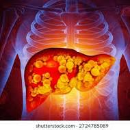
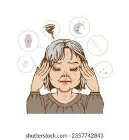

Los esteroides anabolicos son sustancias sinteticas que imitan la accion de la testosterona en el cuerpo. Se utilizan para aumentar la masa muscular y mejorar el rendimiento deportivo, pero su uso indebido puede tener graves consecuencias para la salud.
El uso indebido de esteroides anabolicos puede causar diversos efectos secundarios, incluyendo problemas hepáticos, cardiovasculares, y alteraciones hormonales. Es importante utilizarlos solo bajo supervisión médica.
Los esteroides anabolicos actúan sobre los receptores de andrógenos en las células musculares, promoviendo la síntesis de proteínas y el crecimiento muscular. Su mecanismo de acción es similar al de la testosterona natural.

